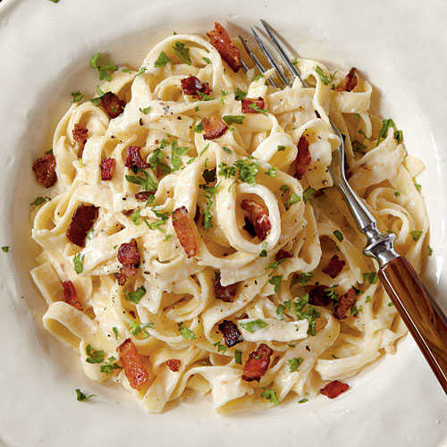

Fettuccine Alfredo with Bacon and Spinach

A pasta lover's dream
Fettuccine Alfredo with Bacon and Spinach is a pasta lovers dream.
A creamy garlicy alfredo sauce, tossed with fettuccine, crispy bacon, and
fresh spinach come together to create one major dish of comfort food.
Begin by cooking the pasta according to the package instructions. Next, melt butter in a medium saucepan over medium low heat. Grate garlic directly into butter, and let mingle for about two minutes. Stir in heavy cream, salt and pepper, then simmer for three minutes. Whisk in 1/4 cup of the hot pasta water and continue to simmer for two more minutes. There’s a bit more whisking to do. Whisk in grated parmesan, and continue whisking until melted. Sauce should begin thicken a bit. Finish by stirring in bacon, and spinach. Stir well and allow the spinach to wilt. Drain pasta and add it to the pan. Toss to coat pasta with the sauce. If desired, garnish with fresh parsley. Salt and pepper to taste and enjoy!
Ingredients
- 1 pound (16 ounce) fettuccine noodles (uncooked)
- water for pasta as needed
- 1/4 cup butter
- 2 cloves garlic
- 1 cup heavy cream
- 1/2 teaspoon salt
- 1/2 teaspoon groud black pepper
- 1 1/2 cups freshly grated Parmesan cheese
- 4 slices bacon, cooked and crumbled
Instructions
- Prepare pasta according to package instructions
- Melt butter in a medium saucepan over medium low heat. Grate garlic
directly into butter, and let mingle for about 2 minutes.
- Add cream, salt and pepper and simmer for 3 minutes.
- Whisk in 1/4 cup of the pasta water. Continue to simmer 2 more
minutes.
- Whisk in grated parmesan, continue to whisk until melted, about 2
minutes. Sauce should thicken a bit.
- Stir in bacon, and spinach; combine, allowing spinach to wilt.
- Add drained pasta to pan and toss to coat pasta.
- If desired, garnish with fresh parsley.
- Salt and pepper to taste.
Return to Main Menu